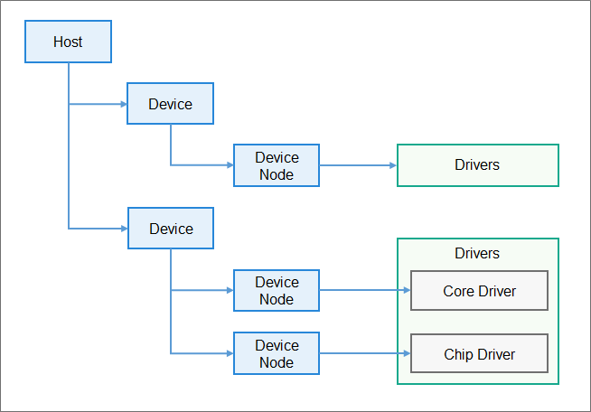

Driver Development¶
Introduction¶
The HDF is designed based on the component-based driver model. It provides more refined driver management to make driver development and deployment more standard. Device drivers of the same type are placed in the same host. You can develop and deploy the drivers separately. One driver can have multiple nodes. The following figure shows the HDF driver management model.
Figure 1 HDF driver management model

How to Develop¶
Driver development based on the HDF consists of two parts: driver implementation and driver configuration. The details are as follows:
Implement driver.
To implement a driver, compile driver service code and register a driver entry.
Driver service code
#include "hdf_device_desc.h" // Header file that describes the APIs provided by the HDF to the driver. #include "hdf_log.h" // Header file of the log interface provided by the HDF. #define HDF_LOG_TAG sample_driver // Tag contained in logs. If the tag is not specified, HDF_TAG is used by default. // The driver service interface must be bound to the HDF for you to use the service capability. int32_t HdfSampleDriverBind(struct HdfDeviceObject *deviceObject) { HDF_LOGD("Sample driver bind success"); return 0; } // Initialize the driver service. int32_t HdfSampleDriverInit(struct HdfDeviceObject *deviceObject) { HDF_LOGD("Sample driver Init success"); return 0; } // Release the driver resources. void HdfSampleDriverRelease(struct HdfDeviceObject *deviceObject) { HDF_LOGD("Sample driver release success"); return; }
Registering the driver entry with the HDF
// Define the object of the driver entry. The object must be a global variable of the HdfDriverEntry type (defined in hdf_device_desc.h). struct HdfDriverEntry g_sampleDriverEntry = { .moduleVersion = 1, .moduleName = "sample_driver", .Bind = HdfSampleDriverBind, .Init = HdfSampleDriverInit, .Release = HdfSampleDriverRelease, }; // Call HDF_INIT to register the driver entry with the HDF framework. When loading the driver, call the Bind function and then the Init function. If the Init function fails to be called, the HDF will call Release to release the driver resource and exit. HDF_INIT(g_sampleDriverEntry);
Compile the driver code.
Use the Makefile template provided by the HDF to compile the driver code.
include $(LITEOSTOPDIR)/../../drivers/hdf/lite/lite.mk # (Mandatory) Import the predefined content of the HDF. MODULE_NAME:= # Generated result file LOCAL_INCLUDE:= # Header file directory of the driver LOCAL_SRCS:= # Source code file of the driver LOCAL_CFLAGS: = # Custom compilation options include $(HDF_DRIVER) # Import the template Makefile to complete compilation.
Link the compilation result file to the kernel image by adding the result file to hdf_vendor.mk in the vendor directory. The following is an example:
LITEOS_BASELIB += -lxxx # Static library generated through linking LIB_SUBDIRS += # Directory of Makefile
Configure the driver.
HDF Configuration Source (HCS) is the source code that describes the configuration of the HDF. For details about the HCS, see Driver Configuration Management.
The driver configuration consists of the driver device description defined by the HDF and private driver configuration information.
(Mandatory) Driver device description
The information required for the HDF to load drivers comes from the driver device description defined by the HDF. Therefore, the device description must be added to the configuration file device_info.hcs defined by the HDF for drivers developed based on the HDF. The following is an example:
root { device_info { match_attr = "hdf_manager"; template host { // Host template. If the node (for example, sample_host) that inherits the template uses default values in the template, the values of the node fields can be omitted. hostName = ""; priority = 100; template device { template deviceNode { policy = 0; priority = 100; preload = 0; permission = 0664; moduleName = ""; serviceName = ""; deviceMatchAttr = ""; } } } sample_host :: host{ hostName = "host0"; // Host name. The host node is used to store a certain type of drivers. priority = 100; // Host startup priority (0-200). A larger value indicates a lower priority. The default value 100 is recommended. If the priorities are the same, the host loading sequence is random. device_sample :: device { // Device node of sample device0 :: deviceNode { // DeviceNode of the sample driver policy = 1; // Driver service release policy. For details, see section Driver Service Management. priority = 100; // Driver startup priority (0–200). A larger value indicates a lower priority. The default value 100 is recommended. If the priorities are the same, the device loading sequence is random. preload = 0; // On-demand driver loading. For details, see "NOTE" at the end of this section. permission = 0664; // Permission for the driver to create device nodes. moduleName = "sample_driver"; // Driver name. The value of this field must be the same as the value of moduleName in the driver entry structure. serviceName = "sample_service"; // Name of the service released by the driver. The name must be unique. deviceMatchAttr = "sample_config"; // Keyword matching the private data of the driver. The value must be the same as that of match_attr in the private data configuration table of the driver. } } } } }(Optional) Private configuration information of the driver
If the driver has private configurations, you can add a driver configuration file to fill in the default configuration information of the driver. When loading the driver, the HDF obtains the information and saves it in the property of HdfDeviceObject, and transfers it to the driver using Bind and Init (see 1). The following is an example of the driver configuration information:
root { SampleDriverConfig { sample_version = 1; sample_bus = "I2C_0"; match_attr = "sample_config"; // The value of this field must be the same as that of deviceMatchAttr in device_info.hcs. } }
After the configuration information is defined, you need to add the configuration file to the board-level configuration entry file hdf.hcs. (You can use the DevEco to perform on-click configuration. For details, see the description about the driver development suite.) The following is an example:
#include "device_info/device_info.hcs" #include "sample/sample_config.hcs"
NOTE: On-demand loading and sequential loading are supported. The detailed usage is as follows: - On-demand loading
typedef enum { DEVICE_PRELOAD_ENABLE = 0, DEVICE_PRELOAD_DISABLE, DEVICE_PRELOAD_INVALID } DevicePreload;In the configuration file, if the value of the preload field is set to 0 (DEVICE_PRELOAD_ENABLE), driver is loaded by default during system startup. If this field value is set to 1 (DEVICE_PRELOAD_DISABLE), the driver is not loaded by default during system startup and can be dynamically loaded later. If the driver service does not exist when a user-level application obtains the driver service (for details about how to obtain the driver service, see Driver Message Mechanism Management), the HDF attempts to dynamically load the driver. - Sequential loading (drivers must be loaded by default) In the configuration file, the priority field (the value is an integer ranging from 0 to 200) indicates the priority of the host and driver. For drivers in different hosts, a smaller host priority value indicates a higher driver loading priority; for drivers in the same host, a smaller driver priority value indicates a higher driver loading priority.